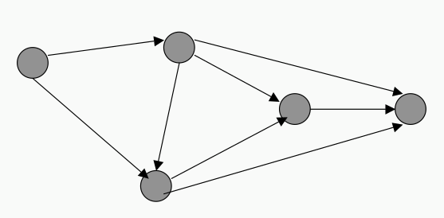
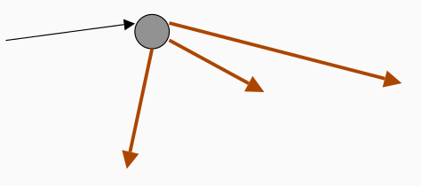
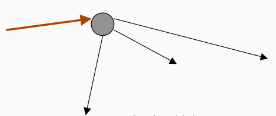
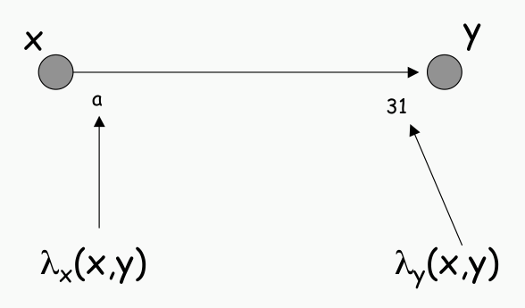
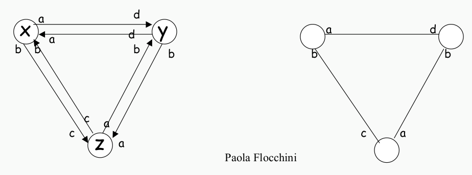

ADRC - Lesson 02
Indice
Nota: parto direttamente dagli appunti della seconda lezione di Algoritmi Distribuiti e Reti Complesse in quanto la prima consisteva solamente in alcuni esempi che introducevano agli argomenti del corso. Probabilmente in futuro verrà fatta la pagina con gli esempi della prima lezione.
1 Ambiente distribuito
Prima di procedere allo studio di algoritmi distribuiti è necessario definire in maniera rigorosa (e non ambigua)
un modello di calcolo.
Tale definizione di modello sarà utile non solo per definire algoritmi distribuiti, ma anche per fare un'analisi
della loro correttezza e stabilità.
In maniera informale possiamo definire un ambiente distribuito (il nostro modello di calcolo) come un insieme di agenti, aventi ognuno delle capacità computazionali, e che interagiscono tra di loro scambiandosi messaggi (message passing) tramite una serie di interconnesioni.
Ovviamente, tale definizione di ambiente distribuito sarà modellata rigorosamente tramite la struttura matematica del grafo.
1.1 Entità
Come già detto, ogni entità (o nodo) della rete ha delle capacità computazionali, le quali sono definite come un insieme di operazioni possibili, quali:
- local storage e processing ovvero la capacità di conservare informazioni di processarle in maniera locale
- scambio di messaggi con altri nodi della rete
- (re-)impostare il clock. Ogni nodo ha un clock interno che standisce come eseguire le sue azioni, il quale può essere impostato
- cambiare il valore dei regitstri. Ogni nodo ha dei registri usati per eseguire le operazioni e/o mantere uno stato1
1.1.1 Stato di una entità
Come detto, una entità può avere uno stato interno, il quale rappresenta un'informazione necessaria per il corretto funzionamento
di un protocollo2 distribuito.
Più formalmente ogni nodo ha un insieme finito di stati possibili \(\Sigma\) defnito a priori (per esempio {idle, computing, waiting, processing, …}),
e in ogni istante una un entità è in uno dei suoi possibili stati (il quale dovrà essere sempre definito).
1.2 Eventi
Il comportamento di ogni entità é reattivo, ovvero scaneta in seguito all'avvenire di eventi Alcuni esempi di eventi possono essere:
- il tick del clock (evento interno al nodo)
- la ricezioni di un messaggio (evento esterno al nodo)
- un impulso esterno alla rete
Anche se in un contesto reale gli eventi avvengono su una linea temporale discreta3, essi verranno considerati essere avvenuti in maniera sequenziale (o ordinata). Questo perché in un intervallo di tempo continuo, la probabilità che due eventi indipendenti occorrano nello stesso identico istante è pari a 0. nnnnn
1.3 Azioni
Come accennato, un'entità reagisce in seguito a un evento. In realtà l'azione che compie in risposta a un evento dipende anche dal suo stato interno nel momento dello stimolo. \[ \mbox{State } \times \mbox{ Evento} \mapsto \mbox{ Action} \] In realtà per azione si intende una sequenza di task (o attività) da svolgere (non necessariamente una sola) come per esempio
- computare un algoritmo
- mangare un messaggio
- cambiare stato
Un'azione è considerata essere atomica, ovvero una volta avviata non può essere interrotta in alcuna maniera.
Inoltre è importante specificare che nel nostro modello le azioni terminano sempre in un tempo finito.
1.4 Comportamento delle entità
Come detto in precedenza, per ogni coppia di stato ed evento corrisponde un'azione.
Questa associazione è dette regola.
Più in generale possiamo definire un comportamento di un'entità come un insieme di regole. Quindi, dato un'entità \(x\), sia \(\Sigma\) il suo insieme di stati possibili, \(\mathcal{E}\) l'insieme degli eventi ed \(A\) l'insieme delle azioni che può eseguire. Il suo comportamento \(B(x)\) è la funzione \[ B(x) : \Sigma \times \mathcal{E} \mapsto A \] tale che è deterministica e completa \[ \forall (s,e) \in \Sigma \times \mathcal{E} \;\; \exists ! a \in A \]
1.5 Comportamento del sistema - protocollo
Raggruppando tutti i comportamenti delle entita di un sistema è possibile definire
il cosidetto protocollo (o algoritmo) distribuito.
Più formalmente un protocollo è l'insieme
\[
B := \lbrace B(x) : x \mbox{ è un'entità del sistema} \rbrace
\]
Un sistema si dice simmetrico (o omogeneo) se ogni entità ha uno stesso comportamento
\[
\forall x,y \mbox { entità} \left[ B(x) \equiv B(y) \right]
\]
In realtà è possibile trasformare ogni sistema in un sistema simmetrico.
Consideriamo un sistema dove esistono due tipi di entità, entità server ed entità client.
Per ogni entità definiamo un ruolo, e in base ad esso eseguiamo l'azione corrispondete.
class Entity:
def __init__(self, role):
self.role = role
def action(self, state, event):
if self.role == 'server':
server_action(self, state, event)
else:
client_action(self, state, event)
1.6 Comunicazione
Le entità di una rete distribuita possono (e devono) interagire tra di loro.
Il modo in cui interagiscono è tramite uno scambio di messaggi (o message passing), dove un messaggio è inteso essere
una sequenza finita di bit.
I messaggi viaggiano su una rete di comunicazione, ovvero un grafo diretto che specifica quali nodi possono scambiarsi messaggi.

Importante specificare che i nodi della rete non hanno una visione globale4 della rete, bensì hanno la sola visione locale. Più formalmente questo significa che ogni nodo può vedere solamente due gruppi di porte logiche, quelle dalle quali arriveranno i messaggi in entrata, e quelle dalle quali usciranno i messaggi in uscita.
- \(N_{out}(x) \subset V\) = out-neighbors of entity \(x \in V\)
- \(N_{in}(x) \subset V\) = in-neighbors of entity \(x \in V\)
Secondo questa definizione il vicinato di un nodo \(x\) sarà l'insieme \(N(x) \equiv N_{out}(x) \cup N_{in}(x)\).
Perciò un nodo può mandare i messaggi solamente ai suoi out-neighbors in \(N_{out}(x)\)

e ricevere messaggid dai suoi in-neighbors in \(N_{in}(x)\)

1.7 Assiomi della comunicazione
Per tutto il corso, ogni argomento verrà trattato sotto le seguenti ipotesi fondamentali
1.7.1 Finite Transmission Delays
In assenza di perdite di messaggi, si assume che il tempo di trasmissione di un massaggio da un nodo verso un suo out-neighbors sia finito ma sconosciuto.
Per ogni messaggio msg esiste una tempo \(t \in \mathbb{R}^+\) tale che entro il tempo \(t\) il messaggio msg
viene trasmesso lungo un arco.
1.7.2 Local orientation
Ogni nodo riesce a distinguere i suoi vicini, ovvero sa quale porta arriva un messaggio o attraverso quale porta inviarlo. In particolare per ogni arco orientato \((x,y)\) esistono due etichette \(\lambda_x(x,y)\), per il nodo \(x\), e \(\lambda_y(x,y)\), per il nodo \(y\).

Molto importante notare che non è detto che \(\lambda_x(x,y) = \lambda_y(x,y)\), ovvero l'etichettamento di un arco è solamente locale a un nodo.
Inoltre non è nemmeno detto che \(\lambda_x(x,y) = \lambda_x(y,x)\), ovvero un nodo non sa distinguere se una coppia di archi in entrata e uscita lo
connettono a uno stesso vicino o meno5.
Secondo questa definizione di orientamento locale è possibile definire la topologia di un grafo come un grafo etichettato \(( G, \lambda_v )_{v \in V}\).
1.8 Restrizioni del modello
Spesso si definiscono protocolli secondo l'assunzioni di ulteriori restrizioni.
Ovviamente più restrizioni ci sono, più il protocollo è debole, in quanto togleindo tali restrizioni il protocollo potrebbe non funzionare.
Un protocollo con meno restrizioni, risulta invece più generale, e perciò più forte.
Di seguito alcune tipologie di restrizioni
1.8.1 Communication Restrictions
- Message Ordering
In assenza di perdita di messaggi, i messaggi trasmessi mediante uno stesso link arrivano nello stesso ordine. Seguono quindi una coda di tipo FIFO6 ordinata con l'ordine di invio (e non di ricezione).
- Bidirectional Links
In questo modello le connessioni sono di tipo bidirezionale, e ogni nodo è anche in grado di distinguere gli estremi degli archi. Più formalmente \[ \forall x \in V \;\; N_{out}(x) = N_{in}(x) = N(x)\\ \land \\ \forall y \in N(x) \;\; \lambda_x(x,y) = \lambda_x(y,x) \]

1.8.2 Reliability Restrictions
- Guaranteed Delivery
I messaggi non arrivano mai corrotti.
- Partial Reliability
Non ci saranno failures7 dal momento in cui osservo il sistema in poi (non ho certezza sul passato).
- Total Reliability
Ho la certezza che non sono mai evvenute failures e mai avverranno.
1.8.4 Knowledge Restrictions
1.8.5 Time restriction
- Bounded Communication Delay
Esiste una costante \(\Delta\) tale che, in assenza di failures, il tempo tempo di trasmissione dei messaggi tramite qualsiasi connessione è al più \(\Delta\).
- Synchronized clocks
Ogni clock delle entità è incrementato di una unità temporale costante in maniera simultanea.
1.9 Misure di complessità
In un sistema distribuito non ha sempre senso parlare di complessità temporale, in quanto non è detto che il tempo di
trasmissione di un messaggio sia sempre lo stesso, e soprattutto non è detto che il clock sia uguale per tutti.
Per far sì che abbia senso parlare di time complexity si necessitano di due restrizioni:
la synchronized clocks restriction e la Bounded Communication Delay restricion.
Idelmente, tutti i messaggi dovrebbero viaggiare con uno stesso delay unitario.
Un'altro tipo di complessità che verrà quasi sempre analizzata è la cosidetta message complexity, ovvero una complessità che tiene conto del numero di messaggi trasmessi prima che un protocollo termini un suo task. Notare che, se un messaggio per arrivare dal nodo \(a\) al nodo \(b\) necessita di essere instradato 4 volte, allora verranno contante tutte e 4 le trasmissioni fatte prima di arrivare a \(b\), anche se il messaggio è uno solo.
Note a piè di pagina:
generalmente viene usato un registro di stato apposito
gli algoritmi distribuiti sono anche detti protocolli
io direi approssimativamente discreta, in quanto (a parer mio) non c'è certezza dell'esistenza del continuo
non conoscono la topologia del grafo
questa assunzione è abbastanza forte
first-in-first-out
perdita di messaggi